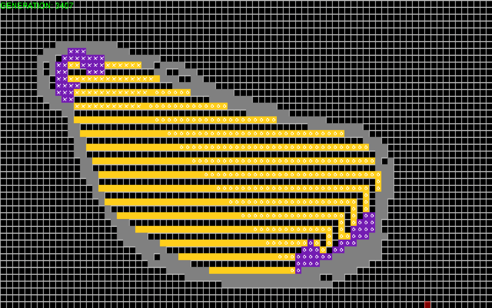
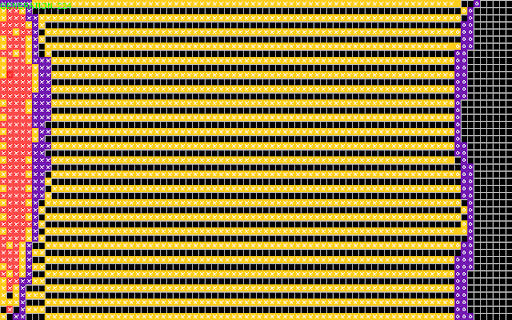

Interesting Behaviors
There are some interesting behaviors that happened due to the transition function I devised for each state and for each situation.
These behaviors weren't planned, but they made some semblance of sense and were interesting and difficult to construct.
| Behavior Name | Behavior Description | Representation in simulation |
|---|---|---|
| Scout Cells | Due to the strange transition function related to the synthesis of frontline cells, there is a gap betweeen cells. As a result of this "weak" frontline, I came up with the term "scout cells" due to the fact that they are separated from the rest of the armies, and are unwilling to cooperate to actually form soemthing that looks strong. |
|
| No Man's Land Cells | These cells are cells that are "factionless" - that is, they do not have an X or an O on them. They are caused by an equal number of X's and O's, simulating a war in which both sides are evenly matched, leading to a No Man's Land situation where no army can cross. |
|
| Points of Skirmish | These are not cells, they're rather an interesting loop that repeats indefinitely. When there are too many neighboring enemy frontier cells, the frontier cells of one side die off. However, the supply cells revive the frontier cells. This sudden revival causes the enemy frontier cells to die off, but their supply cells revive them. This creates a loop in which nobody wins, leading to a skirmish point. A skirmish point can be in one spot or along the entire borderline. One spot would be just a skirmish point, along the border would be a war. |
|
Interesting Scenarios
Combined with the interesting behaviors above, the automata was able to create a bunch of interesting scenarios that can be categorized.
| Scenario Name | Scenario Description | Representation in simulation |
|---|---|---|
| Last Ditch Resistance | Due to X's failure in allocating resources in time, a majority of X's cells run off to become factionless. O's cells convert the factionless cells and form a supply cluster on X's side, leading to them forming an actual front against them. X fails to protect themselves from O due to their weaker scout cells not being a match against the stronger O front. They lose a majority of their territory and capital cells, but were still able to sustain themselves. | 
|
| Complete Stalemate | In this case, both factions were able to generate sufficient armies and a decent frontline to tackle one another. As they clash, they form a firm borderline, and any zones of skirmish is quickly settled instead of being drawn out. Another name for this scenario is "Peace for Their Time." | 
|
| Panicked Mobilization | This situation presents one army as having only scouts and one army with a fully developed frontline. When these armies meet, the army with only scouts lose a bit of their ground, but they eventually hold. After securing the frontline, they successfully create a sustainable and strong army behind it. | 
|
| Life Loving Scout Army | Interestingly, the automata can also give rise to extremely deviant situations. One of them, which I call “Life-Loving Scout Army”, details an alternating horizontal pattern of frontier cells without any supply cells forming. This pattern was formed from an expanding X frontier. This frontier broke down, forming factionless rogue frontier cells. The rogue cells collided with the O capital cluster that previously failed to produce a frontier, leading to the rogue cells switching to the O faction, converting a portion of the X faction into O cells. However, these cells still do not fight or form a stalemate. They simply keep oscillating between their different positions. There is a variation of this situation, which I called the Great Wall of China. | 
|
| The Great Wall of China | Finally, another situation that can be categorized as “extremely deviant” would be the “Great Wall of China”. This happens when two capital clusters form a line, spanning from the top to the bottom of the simulation grid. The configuration was so unique that faction X formed a downward-moving scout column. However, the simulation stops mutating after X’s scout cells hit O’s capital cluster. This collision creates a layer of frontier cells for O, seemingly protecting it from X’s frontier cells. From then, the scout cells alternate between the unoccupied cells. | 
|